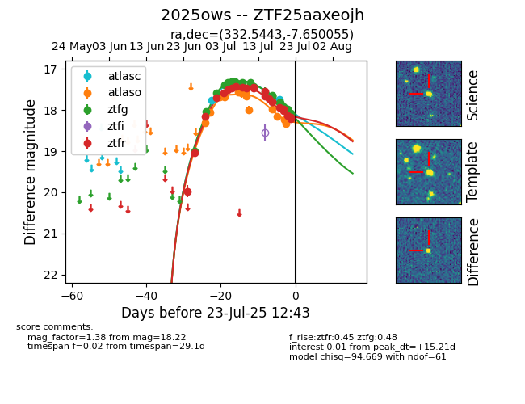

Target ZTF25aaxeojh at 2025-07-23 12:43, see:
FINK: fink-portal.org/ZTF25aaxeojh
Lasair: lasair-ztf.lsst.ac.uk/objects/ZTF25aaxeojh
ALeRCE: alerce.online/object/ZTF25aaxeojh
TNS: wis-tns.org/object/2025ows
YSE: ziggy.ucolick.org/yse/transient_detail/2025ows
alt names
ZTF25aaxeojh (ztf,fink)
2025ows (tns,yse)
coordinates:
equatorial (ra, dec) = (332.5443,-7.65005)
galactic (l, b) = (52.3558,-47.16165)
photometry
last atlasc=17.75, atlaso=18.34, ztfg=18.10, ztfr=18.22
3 atlasc, 13 atlaso, 26 ztfg, 23 ztfr detections
